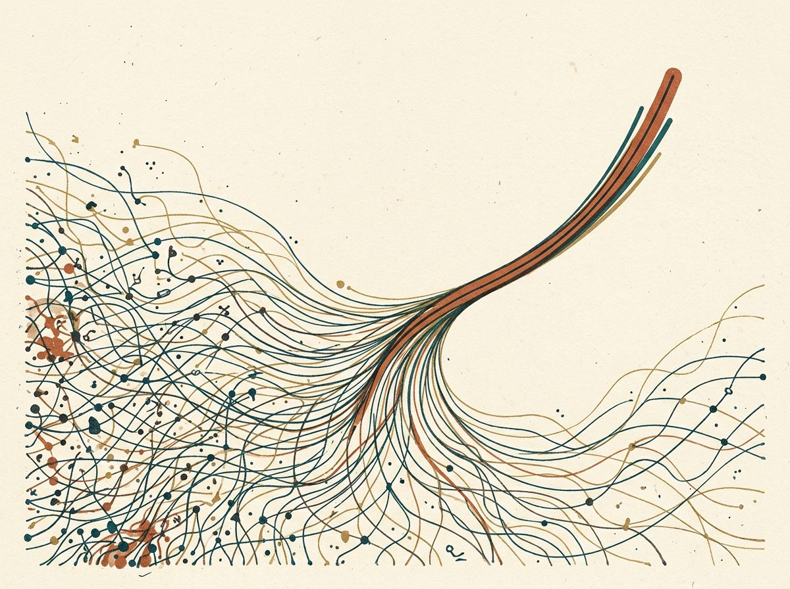

Curious by default, and a little obsessed with how things work.
I'm Karl, a Minnesotan (you-betcha) living in Chicago. I'm a recovering biochemist, passionate about business and tech.

I created this personal site in 2022 as a fun side project — to learn more about code and building a website. Since then, I've slowly kept building: adding other side projects, work case studies, and personal details from my journey, all while continuing to learn, test new integrations, and share tools and info along the way. Still shipping when I can.
Two ways to read me
Work, side projects, travel, and dogs. Pick whichever door you like.
The Work
Three case studies where I rebuilt attribution, renewals, and partner payouts into a single source of truth.
Case studies → 🌍About Me
Where I grew up and have lived, the sixteen countries I've traveled, and the odd facts in between.
Get to know me → 🛠️The Builds
Product experiments I've shipped with Replit and Lovable.
See projects → 🐕Bean & Friends
My dog Bean and the fosters who've passed through. The patient, caring side of the systems brain.
Meet the dogs → 🧮RevOps Calculator
A working tool I built: pipeline coverage, NRR, and revenue bridge models.
Try it live → 💬Kind Words
A couple of recommendations from former colleagues, straight from LinkedIn.
Read them →Things I find fascinating
A running list of the podcasts, videos, and ideas I keep coming back to: Bitcoin, metabolism, signal processing, and the science of doing hard things well.
Podcasts
- 10x Your Bitcoin Security with Multisig ↗
- Nic Carter on Bitcoin core values · Lex Fridman ↗
- The science of weight loss · Kevin Hall, PhD ↗
- Muscle, fat & resistance training · Attia + Norton ↗
- Tim Ferriss, Nick Szabo & Naval Ravikant ↗
- Biology & Culture · Bret Weinstein (Sam Harris) ↗
- Mitochondria, cancer & immunity · Navdeep Chandel ↗
Videos
- No computer is safe · Veritasium ↗
- Fourier Series · Smarter Every Day ↗
- How does Bitcoin actually work? · 3Blue1Brown ↗
Bitcoin
Published research
My name's still on a molecular biology paper. The curiosity didn't go anywhere; it just found a bigger dataset.
How that happened →Hiring for RevOps?
I'm always happy to talk about revenue systems, attribution, and turning data teams can't trust into data they can.